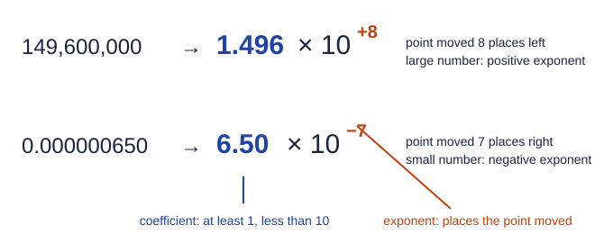

Scientific Notation
Scientific notation writes a number as a coefficient from 1 to just under 10 times a power of ten.
Part 1 · Hook
Why this matters
Part 2 · Before you start
What this builds on
Part 3 · Prerequisite check
Quick check before you start
1. What is 10⁴ × 10⁻⁷?
- 10⁻³
- 10¹¹
- 10⁻²⁸
- 10³
Show the answer
Multiplying powers of ten adds the exponents: 4 + (−7) = −3.
- Correct: 10⁻³:
- 10¹¹:
- 10⁻²⁸:
- 10³:
2. What is 10⁻² as a decimal?
- 0.01
- −100
- 0.1
- −0.01
Show the answer
A negative exponent is a reciprocal: 1/10² = 1/100 = 0.01.
- Correct: 0.01:
- −100:
- 0.1:
- −0.01:
Part 4 · See it
See it first

Part 5 · Step by step
How it works, step by step
- Very large and very small numbers carry many zerosthey are slow to write and easy to miscount
- Any number can be split into a coefficient between 1 and 10 and a power of tenthe zeros move into the exponent
- Moving the decimal point left makes the coefficient smallerthe exponent goes up by one for each place, so a large number gets a positive exponent
- The exponent shows the size at a glancecomparing, multiplying and dividing become exponent arithmetic
Part 6 · Key ideas
Key ideas
- Scientific notation: coefficient × 10ⁿ, with 1 ≤ coefficient < 10. 0.00560 = 5.60 × 10⁻³; 149,600,000 = 1.496 × 10⁸.
- Numbers above 10 get positive exponents; numbers below 1 get negative exponents.
- Multiply: multiply coefficients, add exponents. Divide: divide coefficients, subtract exponents. Then fix the coefficient if it left the 1-10 range.
- Add or subtract only after giving both numbers the same exponent. One order of magnitude is a factor of 10.
Part 7 · Misconception
A common mistake
The wrong idea: A larger coefficient always means a larger number, so 8 × 10⁻⁴ is bigger than 3 × 10⁻².
What actually happens: Compare the exponents first. 8 × 10⁻⁴ = 0.0008 and 3 × 10⁻² = 0.03, so the second is about 40 times larger. The coefficient only decides between numbers with the same exponent.
Part 8 · Check yourself
Check yourself
Exam-style questions. Anything you miss goes into your review queue.
1. Which number is written in correct scientific notation?
- 47 × 10⁻⁴
- 0.47 × 10⁻²
- 4.7 × 10⁻³
- 4.7 × 3⁻³
Show the answer
In scientific notation the coefficient is at least 1 and less than 10: 4.7 × 10⁻³ = 0.0047.
- 47 × 10⁻⁴: Same value, but the coefficient 47 is 10 or more, so it is not in standard form.
- 0.47 × 10⁻²: Same value, but the coefficient 0.47 is less than 1.
- Correct: 4.7 × 10⁻³: Right: the coefficient is between 1 and 10, times a power of ten.
- 4.7 × 3⁻³: Scientific notation uses powers of ten, not powers of 3.
2. A fine smoke particle is 0.000000650 m across. Write it in scientific notation (type it as, for example, 6.50e-7) in meters.
Type a number in m.
Show the answer
Move the decimal point right until one nonzero digit is in front: 7 places, so the exponent is −7. 6.50 × 10⁻⁷ m. Moving right for a small number gives a negative exponent.
- Answer: 6.50 × 10-7 m
3. Calculate (3.0 × 10⁴) × (2.0 × 10⁻⁶).
Type a number.
Show the answer
Multiply the coefficients: 3.0 × 2.0 = 6.0. Add the exponents: 4 + (−6) = −2. The answer is 6.0 × 10⁻².
- Answer: 0.060
4. Calculate (8.4 × 10⁶) ÷ (2.1 × 10⁻³).
Type a number.
Show the answer
Divide the coefficients: 8.4 ÷ 2.1 = 4.0. Subtract the exponents: 6 − (−3) = 9. The answer is 4.0 × 10⁹.
- Answer: 4.0 × 109
5. A calculation gives 52 × 10⁵. What is this in correct scientific notation?
- 5.2 × 10⁴
- 52 × 10⁵
- 0.52 × 10⁷
- 5.2 × 10⁶
Show the answer
52 × 10⁵ = 5.2 × 10¹ × 10⁵ = 5.2 × 10⁶. When the coefficient shrinks, the exponent grows to keep the value the same.
- 5.2 × 10⁴: The coefficient got 10 times smaller, so the exponent must go up by one, not down.
- 52 × 10⁵: The value is right, but a coefficient of 52 is not between 1 and 10.
- 0.52 × 10⁷: The value is right, but a coefficient of 0.52 is less than 1.
- Correct: 5.2 × 10⁶: Right: dividing the coefficient by 10 means multiplying the power of ten by 10.
6. Which list is in order from smallest to largest?
- 8 × 10⁻⁴, 3 × 10⁻⁵, 2 × 10⁻², 1 × 10³
- 1 × 10³, 2 × 10⁻², 8 × 10⁻⁴, 3 × 10⁻⁵
- 3 × 10⁻⁵, 8 × 10⁻⁴, 2 × 10⁻², 1 × 10³
- 2 × 10⁻², 8 × 10⁻⁴, 3 × 10⁻⁵, 1 × 10³
Show the answer
3 × 10⁻⁵ = 0.00003, 8 × 10⁻⁴ = 0.0008, 2 × 10⁻² = 0.02 and 1 × 10³ = 1000. With the coefficient between 1 and 10, the exponent decides the order.
- 8 × 10⁻⁴, 3 × 10⁻⁵, 2 × 10⁻², 1 × 10³: This sorts by coefficient first. A larger coefficient does not beat a more negative exponent: 0.0008 is more than 0.00003.
- 1 × 10³, 2 × 10⁻², 8 × 10⁻⁴, 3 × 10⁻⁵: This is largest to smallest, the reverse order.
- Correct: 3 × 10⁻⁵, 8 × 10⁻⁴, 2 × 10⁻², 1 × 10³: Right: compare exponents first; the most negative exponent is the smallest number.
- 2 × 10⁻², 8 × 10⁻⁴, 3 × 10⁻⁵, 1 × 10³: This treats −2 as smaller than −5. On the number line, 10⁻⁵ is far smaller than 10⁻².
7. A sample contains 1.5 × 10²¹ molecules, and each molecule has a mass of 3.0 × 10⁻²³ g. What is the total mass in grams?
Type a number in g.
Show the answer
(1.5 × 10²¹) × (3.0 × 10⁻²³ g) = 4.5 × 10⁻² g = 0.045 g. Coefficients multiply (1.5 × 3.0 = 4.5) and exponents add (21 − 23 = −2).
- Answer: 0.045 g
Part 9 · Summary
Summary
Part 10 · Up next
What comes next
Part 11 · Connections